操作系统笔记10 虚拟内存
背景
- 自从有了计算机以来，我们就希望能够方便、高效地使用(今天仍然)十分有限的内存：
- 用户总是可以认为自己计算机的内存大到足够运行任何程序。
- 程序员可以认为自己的程序将运行在巨大、连续的内存中。不需要用overlay或swap等技术来自己管理内存。
- 进程在运行过程中不能访问(包括读写)其他进程的数据，更不能访问属于操作系统的数据。而且某一个进程引起的问题不会波及到操作系统或其他进程。
- 由于内存有限，应该尽可能地共享一些公用的代码和数据。
- 前面介绍的各种技术解决了上述问题的某一些方面，但没有提出一个整体的解决方案。
- 虚拟内存技术基于已有的各种技术给出了一个完整的解决方案, 是20世纪计算机技术最重要的发明之一。
虚拟内存
- **
虚拟内存**：将用户逻辑内存与物理内存的分离。 - 为每个进程提供一个巨大的，连续的和私有的逻辑内存，可能比物理内存大得多。只有部分程序需要在内存中执行。
- 允许地址空间被多个进程共享，更有效的进程创建。 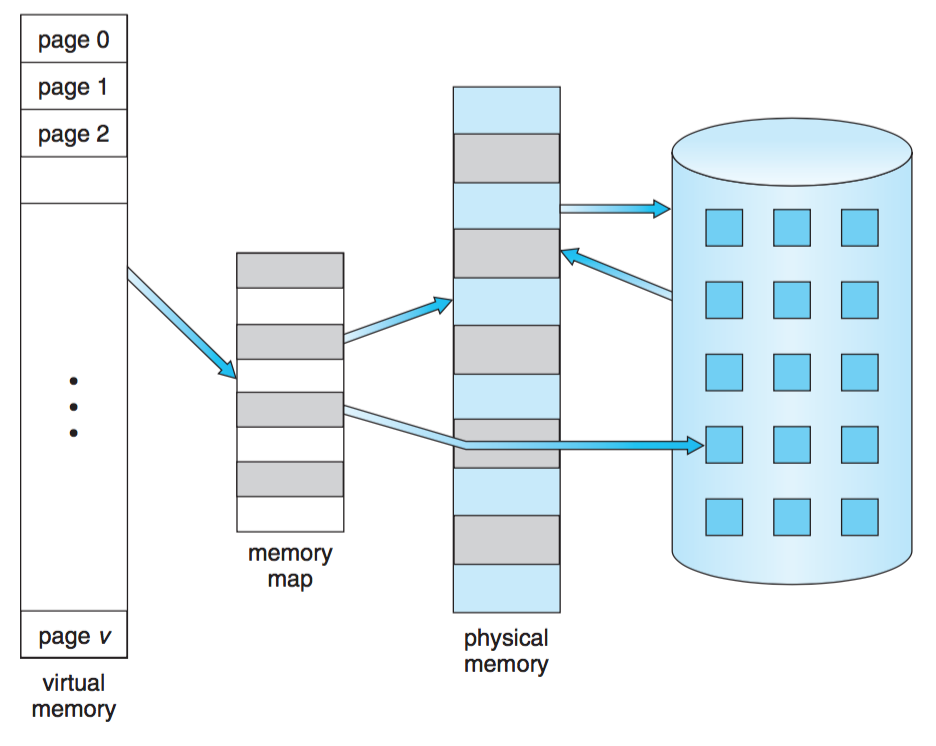
- 虚拟内存可通过以下方式实现：
- 按需调页
- 按需分段
按需调页
- **
按需调页：仅在需要时才调入相应的页，即懒惰交换**。 - 需要更少的 I/O 。
- 需要更少的内存。
- 响应更快。
- 更多的进程。
- 交换程序是对整个进程进行操作，而调页程序只对单个页进行操作。 因此按需调页需要使用调页程序。 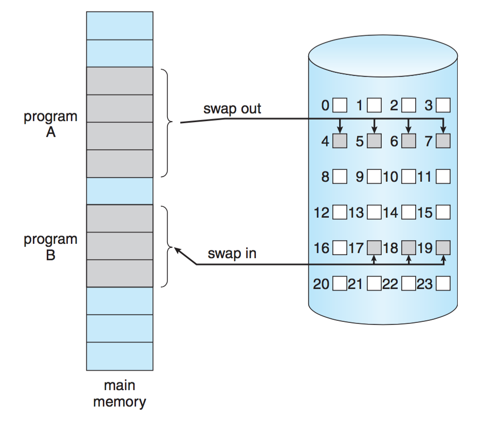
- **
有效-无效位**：当操作系统调度某个进程运行时，判断该进程的页面是否已经调入内存中。 - ！每个页表项(PTE)都有一个有效无效位关联。
- 设置为“有效”：关联页面合法且在内存中。
- 设置为“有效”：该页面不合法(不在该进程的逻辑地址空间中)，或者是合法的，但是在磁盘上。 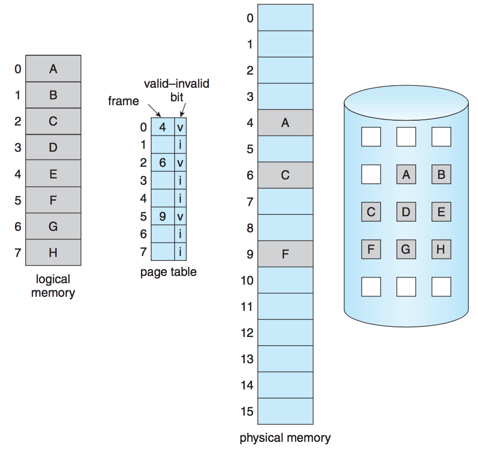
- 在MMU中的地址转换期间，如果PTE中的有效-无效位是“无效”
- CPU触发一个**
页面错误陷阱**(page-fault trap)陷入操作系统。这种陷阱是由于操作系统未能将所需的页调入内存中引起的。 - 操作系统检查内部页表（通常与PCB一起保存）来确定该引用是合法还是非法的地址访问。
①引用非法，OS终止进程；②引用有效但尚未调入页面，OS将调入该页面。 - 找到一个空闲帧。
- 调度一个磁盘操作，以便将所需的页面调入刚分配的帧。
- 当磁盘操作完成后，修改进程的内部表和页表，以表示该页已在内存中
- (CPU自动执行)重新开始因陷阱而中断的指令。进程现在能访问所需的页，就好像它似乎总在内存中。 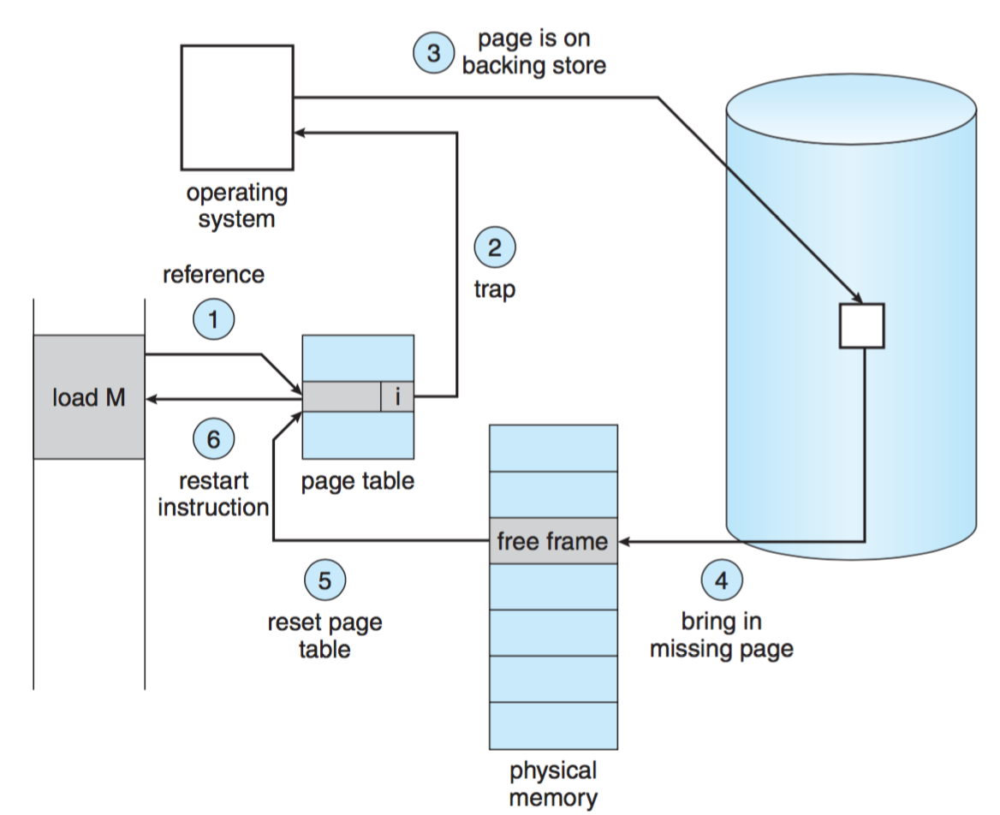
- 架构要求(硬件)
- 页表：该表能够通过
有效-无效位或保护位，将条目设定为无效。 - 次级存储器：该次级存储器用来保护不在内存中的页。次级存储器通常为快速硬盘。它通常称为交换设备，用于交换的这部分磁盘称为**
交换空间**。 - 能在发生页面错误后准确重新执行指令。在出现页错误时，保持中断进程的状态(寄存器、条件代码、指令计数器)，必须能够按完全相同的位置和地址重新开始执行进程)。对于绝大多数情况，这种要求容易满足。
页面置换
- 如果增加了多道程序的程度。那么会**
过度分配**内存。 - 发生页面错误时，没有可用的空闲帧。如何进行？
- 在内存中找到一个没有被充分使用的帧，将其分页。
页面替换：修改页错误处理程序以包括页置换。页面置换可以在较小的物理内存上提供大的虚拟内存 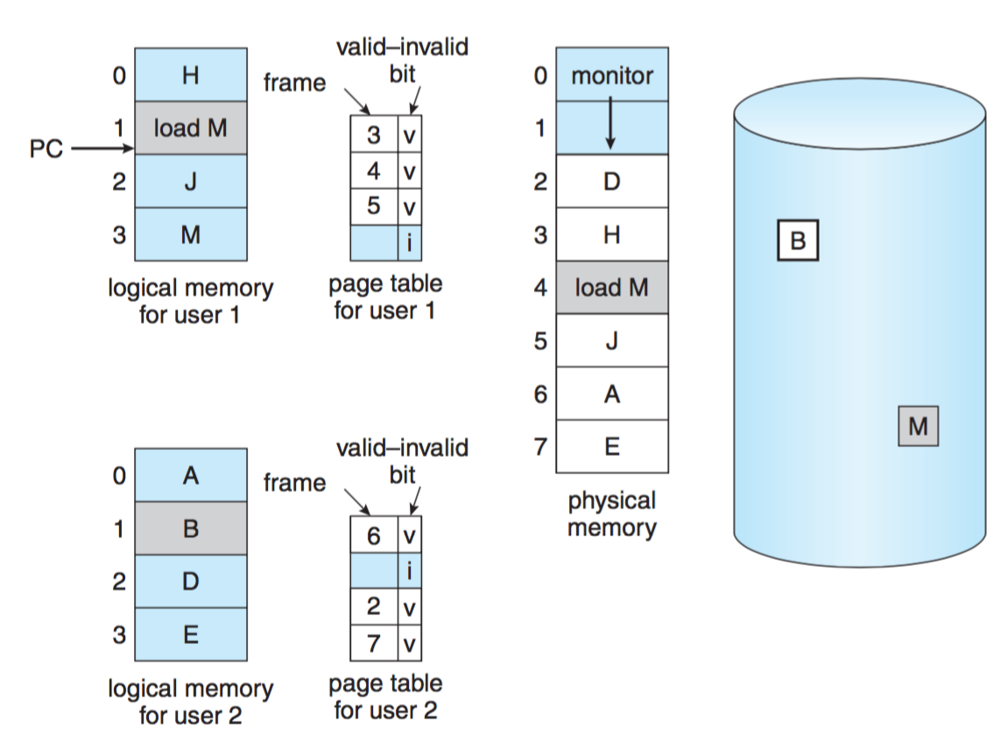
- 查找所需页在磁盘上的位置。
- 查找一个空闲帧：
①如果有空闲帧，那么就使用它。
②如果没有空闲帧，那么就使用页面置换算法以选择一个牺牲“帧”。
③将“牺牲”帧的内容写到磁盘上，改变页表和帧表。 - 将所需页读入(新)空闲帧，改变页表和帧表。
- 重启用户进程。 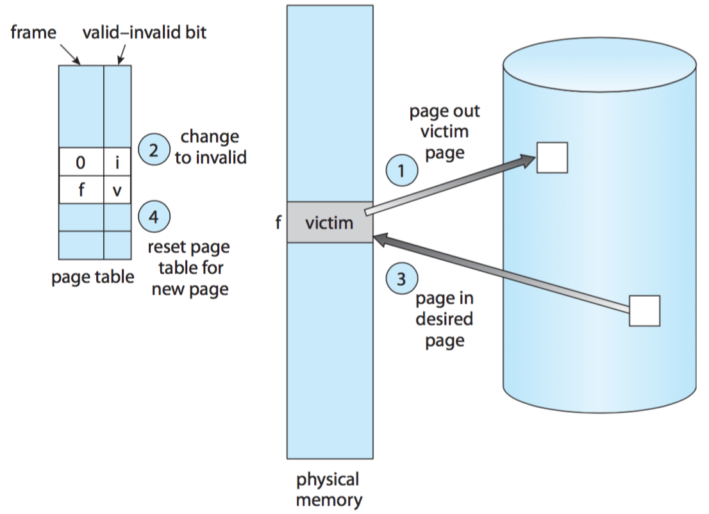
- 注意：
- 如果没有帧空闲，则需要两次页传输：一次换入和一次换出。页面处理时间加倍。
- 可以通过将每页或帧与修改位（或脏位）通过硬件关联，来降低额外开销。
①每当页面被修改时，硬件就会设置该页的修改位以表示该页已修改。
②当修改位被设置时，才需要进行页换出操作。 - 页面置换是按需调页的基础。
页面置换算法
- 算法目标：得到最低的页面错误率。
- 为了方便研究各种页面置换算法，计算各个算法所产生的页面错误，引入如下概念：
- 引用串：内存引用的字符串。 通常以页面为单位。
- 通过在引用串上运行页面置换算法，并计算该引用串上的
页面错误数来评估算法。 - 页错误和帧数量图： 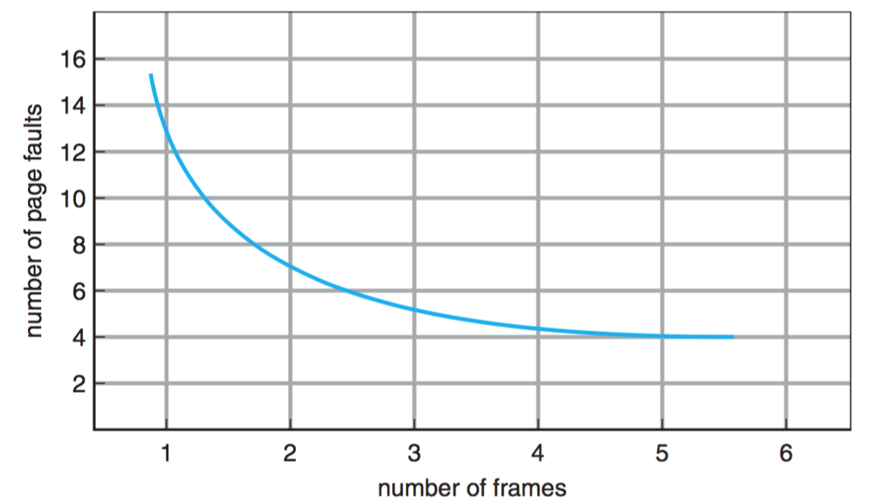
- 类型
- FIFO页置换
- 最优置换
- LRU页置换
- 近似LRU页置换（二次机会算法）
性能
- 页面错误率：0 ≤ p ≤ 1.0。
- 如果p = 0，则不存在页面错误;
- 如果p = 1，则每个引用都会出现页面错误
- 有效访问时间(EAT)
EAT = (1 - p) × (内存访问时间)+p × (页面错误时间) - 一般来说，内存访问时间远小于处理页面错误的时间。因此，我们可以假设EAT与p成正比，即页面错误率。
FIFO页置换
- FIFO页置换：置换最旧的页。 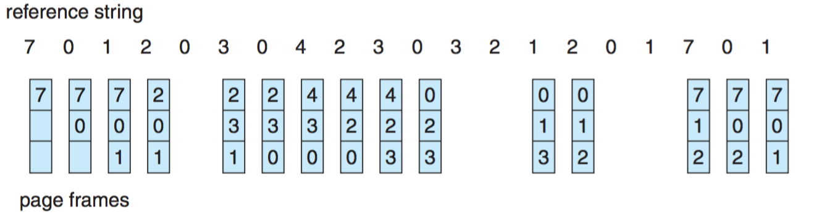
Belady异常：一般情况下，page-fault会随着frame的数量增加而减少。但如果采用FIFO算法，情况有时并非如此。 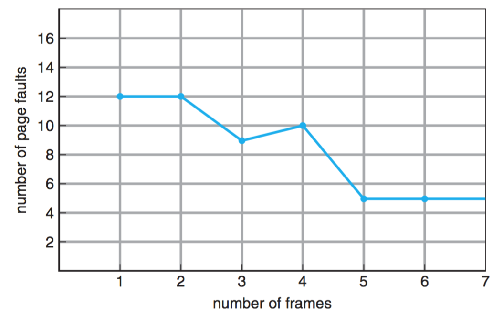
最优置换(OPT / MIN)
- 最优置换：置换最长时间不会使用的页。
- 最优页面置换算法是所有算法中产生页错误率最低的。
- 最优置换难以实现，因为需要参考串的未来的知识。最优算法主要用于研究。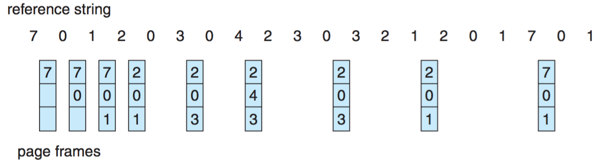
LRU页置换/最近最少使用算法
- FIFO算法使用的是页面调入的时间。OPT算法使用的是页将来使用的时间。
- LRU页置换：置换最近最少使用的页面。近似的最佳页面替换。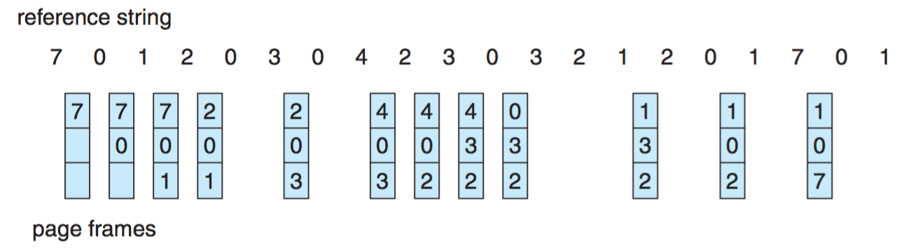
- LRU置换可能需要一定的硬件支持来为页帧确定一个排序序列。有两种可行实现：①计数器 ②栈
近似LRU页置换
- 二次机会页置换算法/时钟置换算法：基本算法是FIFO置换算法。
- 当要选择一个页时，检查其引用位。
- 如果值为0，则直接置换。如果访问位是1，就给它第二次机会。并选择下一个FIFO页面。
- 当一个页面得到第二次机会时，它的访问位就清为0，它的到达时间就置为当前时间。如果该页在此期间被访问过，则访问位置为1。
- 可以采用循环队列实现。 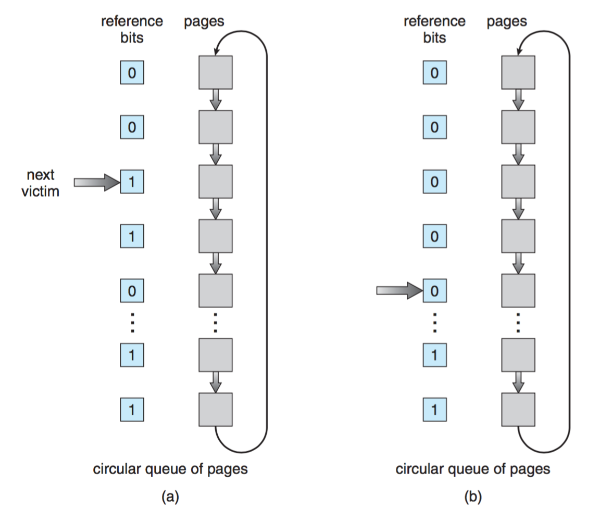 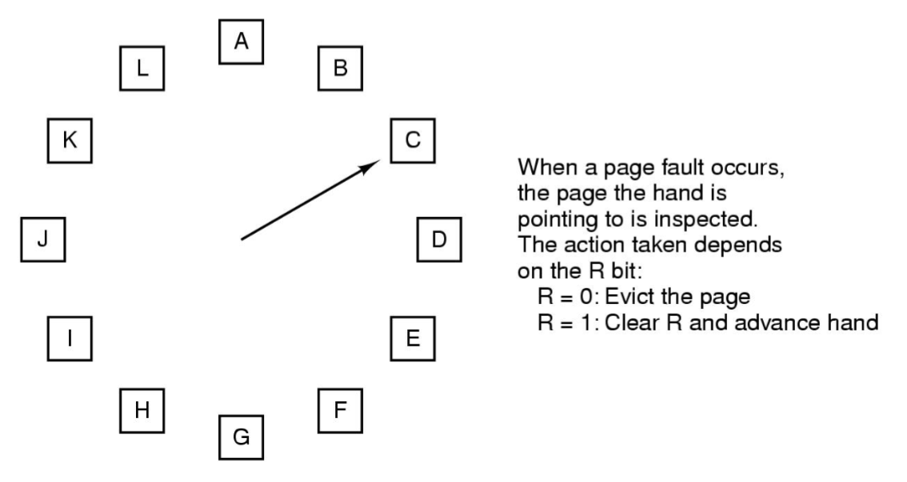
为什么虚拟内存运行良好？
- **
局部模型**： - 局部：经常使用的页的集合。当进程执行时，它从一个局部移向另一个局部。
- 一个程序通常由多个不同局部组成。它们可能重叠(共享页面)。
- 局部模型也是缓存工作正常的原因。
- 内存引用模式中的局部性： 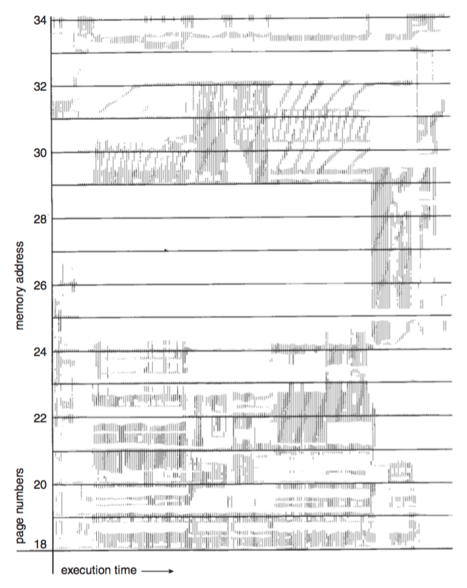
颠簸
- 如果系统没有“足够”的帧，页面错误率非常高。 这导致：
- CPU利用率低。
- 长期调度员认为需要提高多程序的程度。
- 系统中增加了更多进程。
- 颠簸：是一个系统忙于将页面导入和导出并且没有任何用处的情况。
- 原因：所有局部大小的总和 > 总内存大小 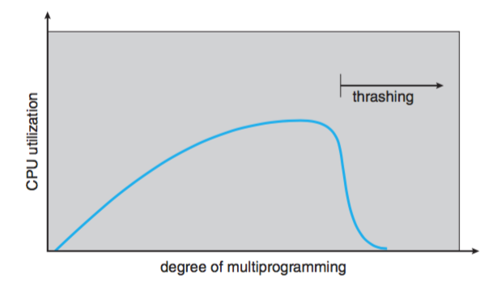
工作集合模型
**
工作集合模型**是基于局部性假设的。该模型使用参数 Δ 定义工作集合窗口
这最近 Δ 个引用的页面集合称为工作集合。因此，工作集是进程的局部性的近似值。
将WSSi表示为最近进程Pi的工作集。D为总的帧需求量。
D = Σ WSSi
如果D > 可用帧的数量，有的进程就会得不到足够的帧，从而会出现颠簸。
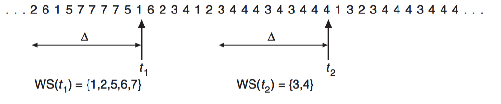使用工作集合模型
操作系统监视每个进程的工作集合，并为其分配大于其工作集合的帧数。
如果还有空闲帧，那么可以启动另一进程。
如果所有工作集合大小之后 > 可用帧的总数，那么操作系统会选择暂停一个进程。
工作集合策略可以防止颠簸，并尽可能保持多道程序的程度。
All articles in this blog are licensed under CC BY-NC-SA 4.0 unless stating additionally.